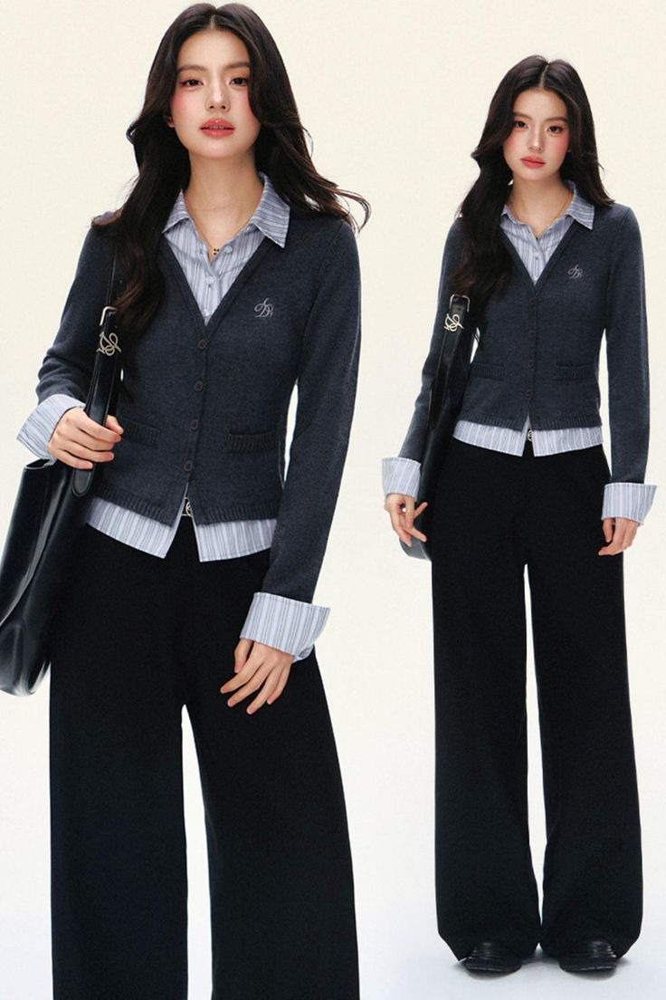
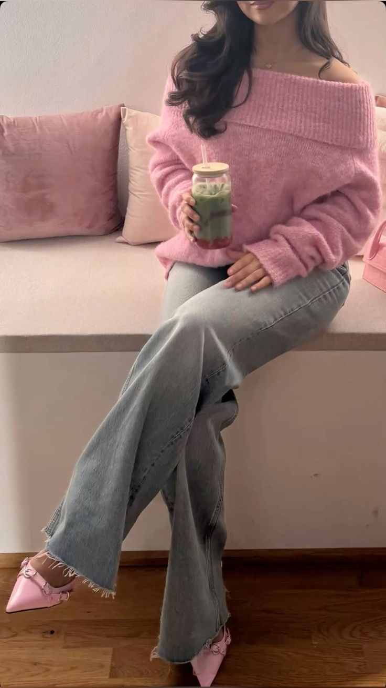
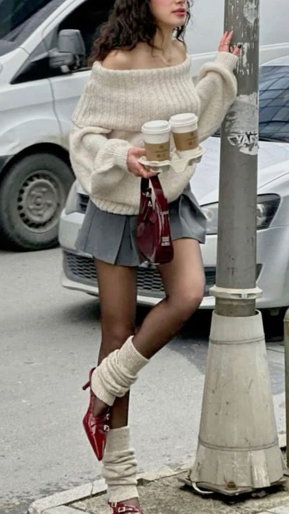
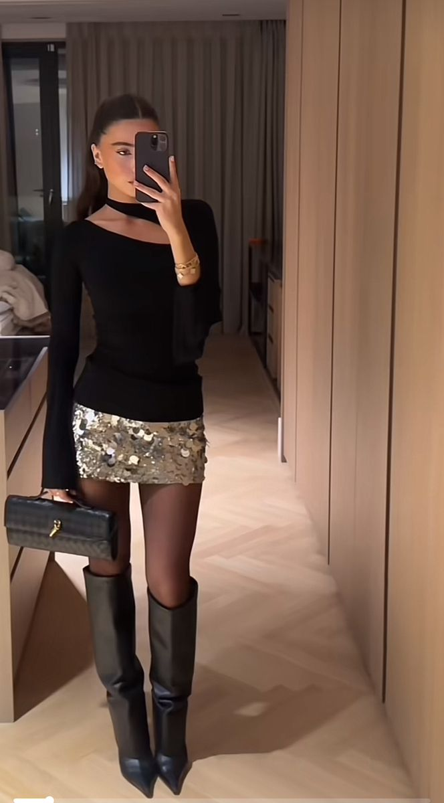

Duruma Göre Kombinler
♥
🌟 Minimal takılar ve doğal fresh bir makyaj bu kombine çok yakışır! 🌟

Sunum Günü Kombini
- Krem blazer + beyaz basic tişört
- Yüksek bel kumaş pantolon
- Loafer veya kısa topuklu bot
♥
🌟 Dağınık topuz ya da düşük at kuyruğu hem rahat etirir hem de yüzünü fresh gösterir! 🌟

Final Haftası Konfor Kombini
- Oversize sweatshirt
- Bol kesim pantolon / jogger
- Spor ayakkabı
♥
🌟 Şapka veya güneş gözlüğü tarzını tamamlar! 🌟

Kampüs Café Buluşması
- Fit triko veya crop
- Mom jean veya midi etek
- Sneaker / kısa bot
♥
🌟 Parlak ruj ve aksesuar geceyi tamamlar! 🌟

Kulüp / Akşam Etkinliği Kombini
- Saten gömlek veya şık body
- Palazzo pantolon veya mini etek
- Topuklu bot
Haftanın Parçası: Oversize Blazer
- Ders Kombini: Blazer + mom jean + basic tişört
- Kahve Buluşması: Blazer + midi etek + kısa bot
- Kulüp Etkinliği: Blazer + mini elbise + topuklu bot
- Randevu Kombini: Blazer + kalem etek + topuklu ayakkabı
- Alışveriş Kombini: Blazer + skinny jean + sneaker
- Fotoğraf Çekimi: Blazer + midi etek + şık topuklu
- Brunch: Blazer + crop + bol pantolon
- Sinema Günü: Blazer + casual elbise + loafer
- Hafta Sonu Gezisi: Blazer + şort + sneaker
- Kültürel Etkinlik: Blazer + maxi etek + şık topuklu
Hızlı Kombin Rehberi
-
3 Renk Kuralı Kırıcı: Kombininizin %90'ı nötr (siyah, beyaz, bej) ise, aksesuarlarda 4-5 canlı ton kullanmaktan çekinmeyin.
-
Hacim Oyunu: Balon kol bir bluz giyiyorsanız, alt parçanızın deri tayt veya sigaret pantolon gibi ince silüetli olması sofistike bir denge yaratır.
-
Tek Parça Kahramanlar: Beyaz keten takım elbise, siyah balıkçı yaka triko elbise ve camel rengi trençkot, zamansız stiliniz için vazgeçilmezlerdir.
-
Aksesuar Odak Noktası: Büyük, heykelsi bir kolye veya iddialı bir kemer kullanıyorsanız, diğer takıları minimal tutun. Vurguyu tek bir parçaya verin.
-
Mevsimler Üst Üste: Yazlık slip elbisenizin üzerine kışın oversize hırka ve kalın bot giyerek parçalara dört mevsim hayat verin.
-
Desen Karıştırma: Çizgili bir tişörtü, aynı tonlarda küçük çiçek desenli bir etekle birleştirin. Farklı ölçeklerdeki desenler bir arada çok iyi durur.
-
Ayakkabı Karşıtlığı: Blazer ve kumaş pantolon gibi ciddi bir kombini kalın tabanlı spor ayakkabılarla tamamlayarak resmiyeti kırın (Smart-Casual).
-
Çanta Kimlik Kartı: Kombin ne kadar sadeyse, çantanız o kadar gösterişli olabilir. (Örn: Siyah kot-tişört kombini + neon yeşil zincir çanta).
-
Sıcak/Soğuk Dokular: Kışın kalın yün kazak ile parlak saten etek, yazın ise ince ipek gömlek ile kaba denim şort gibi zıt dokuları birleştirin.
-
Tek Renk Vurgusu: Tek bir canlı rengi (fuşya, elektrik mavisi) çantanızda, ayakkabınızda ve rujunuzda tekrar ederek sofistike bir uyum yakalayın.
×

Kombin Adı
Temel Parçalar
Ek Not: Bu kombin daha çok ilkbahar/sonbahar ayları için idealdir. Hava durumuna göre bir trençkot ekleyebilirsiniz.